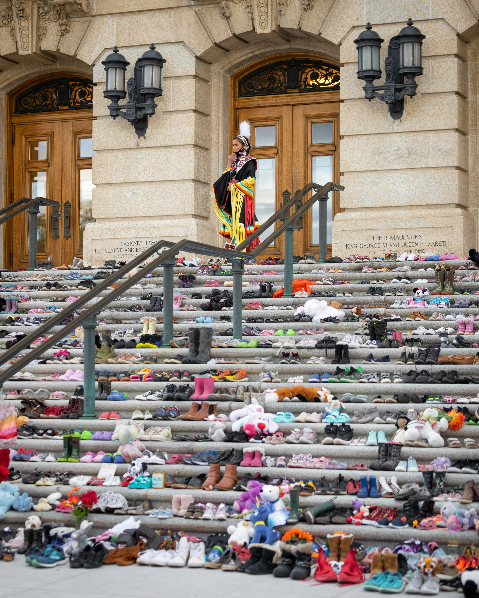

Every Child Matters

For a period of more than 150 years, First Nations, Inuit and Métis Nation children were taken from their families and communities to attend schools which were often located far from their homes. More than 150,000 children attended Indian Residential Schools. Many never returned.
The first church-run Indian Residential School was opened in 1831. By the 1880s, the federal government had adopted an official policy of funding residential schools across Canada. The explicit intent was to separate these children from their families and cultures. In 1920, the Indian Act made attendance at Indian Residential Schools compulsory for Treaty-status children between the ages of 7 and 15.
The Truth and Reconciliation Commission of Canada (TRC) concluded that residential schools were “a systematic, government- sponsored attempt to destroy Aboriginal cultures and languages and to assimilate Aboriginal peoples so that they no longer existed as distinct peoples.” The TRC characterized this intent as “cultural genocide.”
The schools were often underfunded and overcrowded. The quality of education was substandard. Children were harshly punished for speaking their own languages. Staff were not held accountable for how they treated the children.
We know that thousands of students suffered physical and sexual abuse at residential schools. All suffered from loneliness and a longing to be home with their families.
The schools hurt the children. The schools also hurt their families and their communities. Children were deprived of healthy examples of love and respect. The distinct cultures, traditions, languages, and knowledge systems of First Nations, Inuit and Métis peoples were eroded by forced assimilation.
The damages inflicted by Residential Schools continue to this day.
For a great many Survivors, talking about their experiences in residential schools means reliving the traumas they experienced. For years, many told no one about what they had endured.
In 1996, the landmark Royal Commission on Aboriginal Peoples drew attention to the lasting harm that was done by the residential schools. A growing number of Survivors and their descendants came forward to tell their stories and demand action.
Above text is from: https://nctr.ca/education/teaching-resources/residential-school-history/
The discovery of mass graves at former Residential School locations motivated many to create moving memorials on the steps of government buildings, as shown in the image above.
Neil Patrick Olaires and 000964569